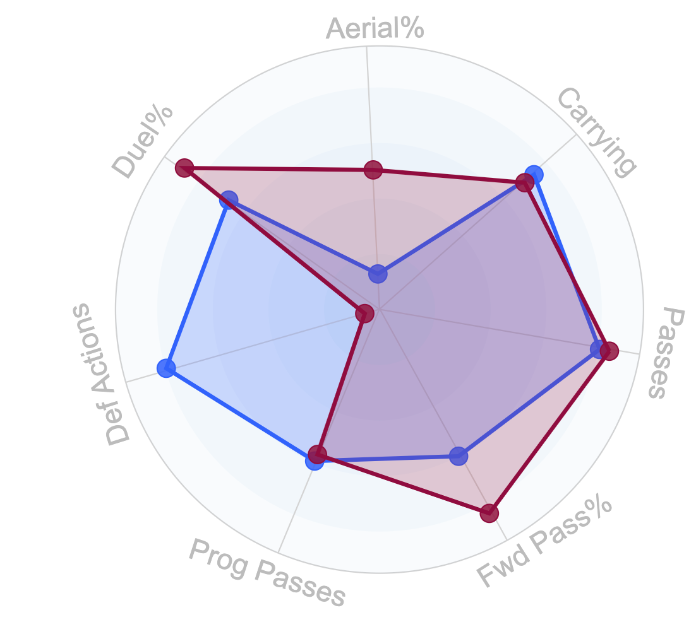
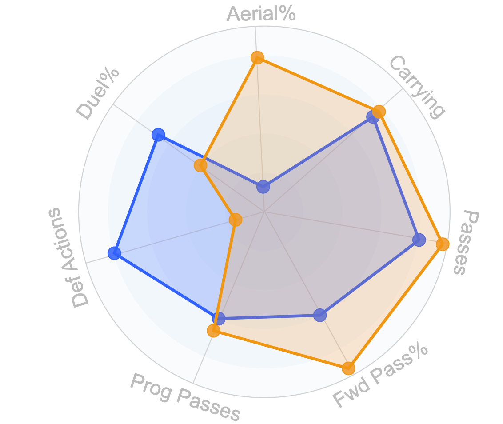
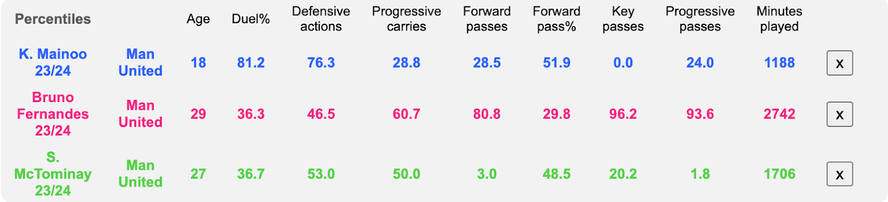
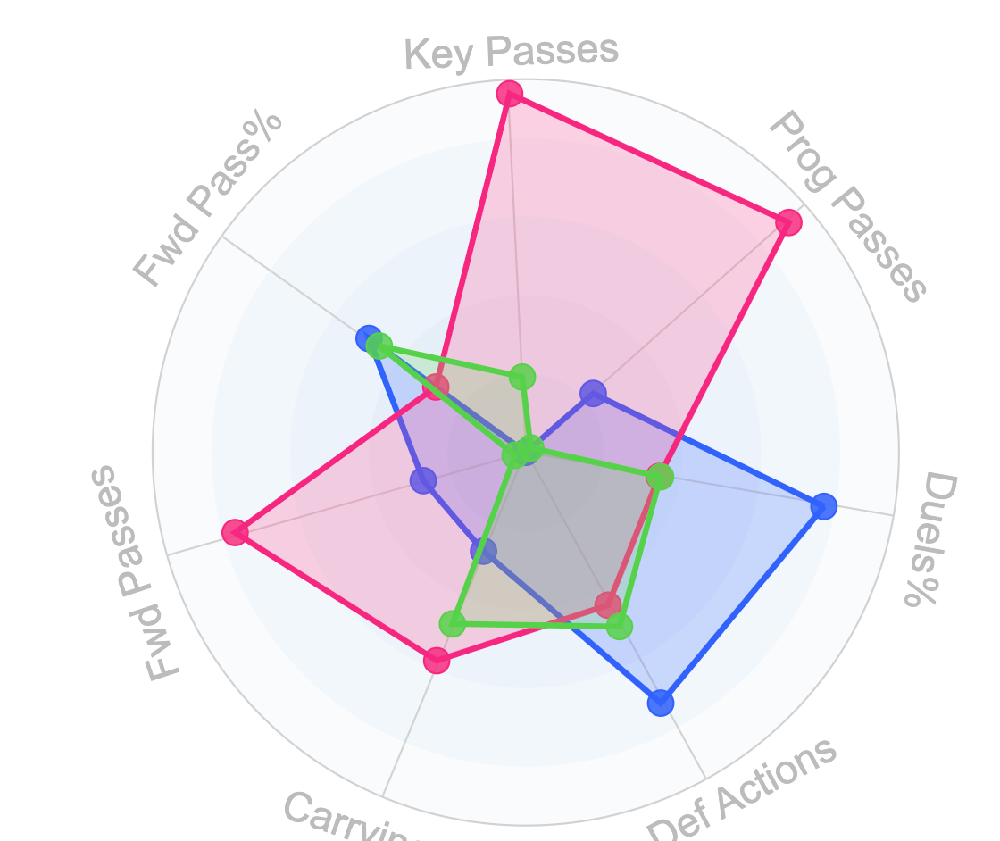
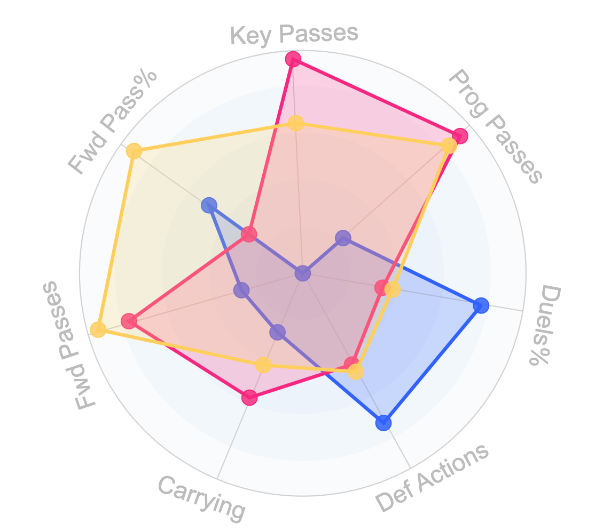
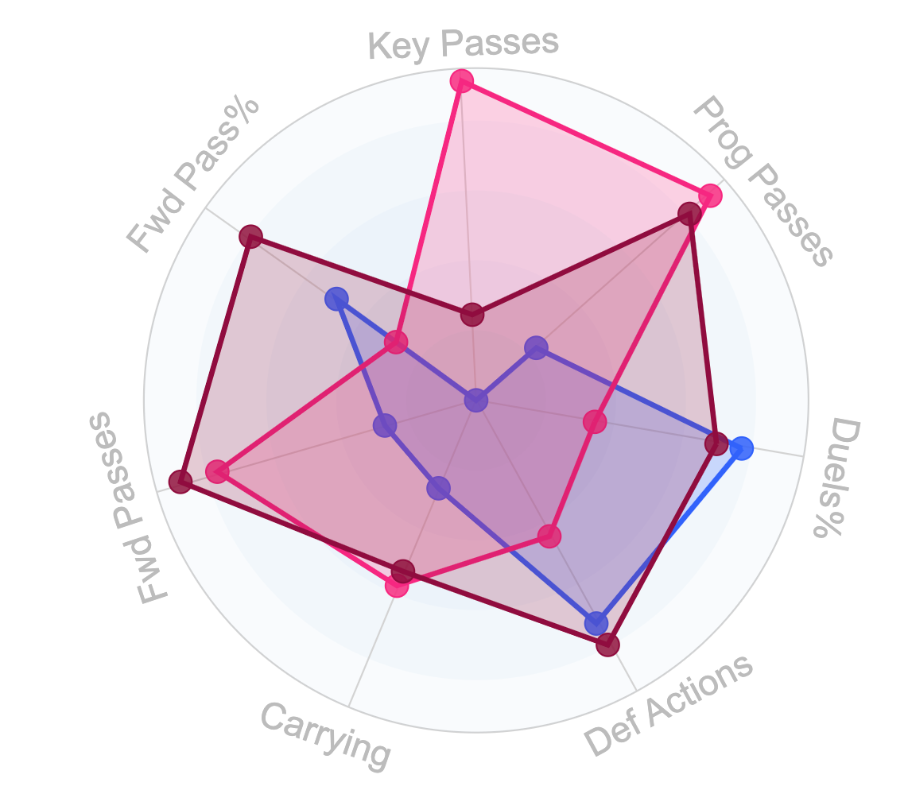
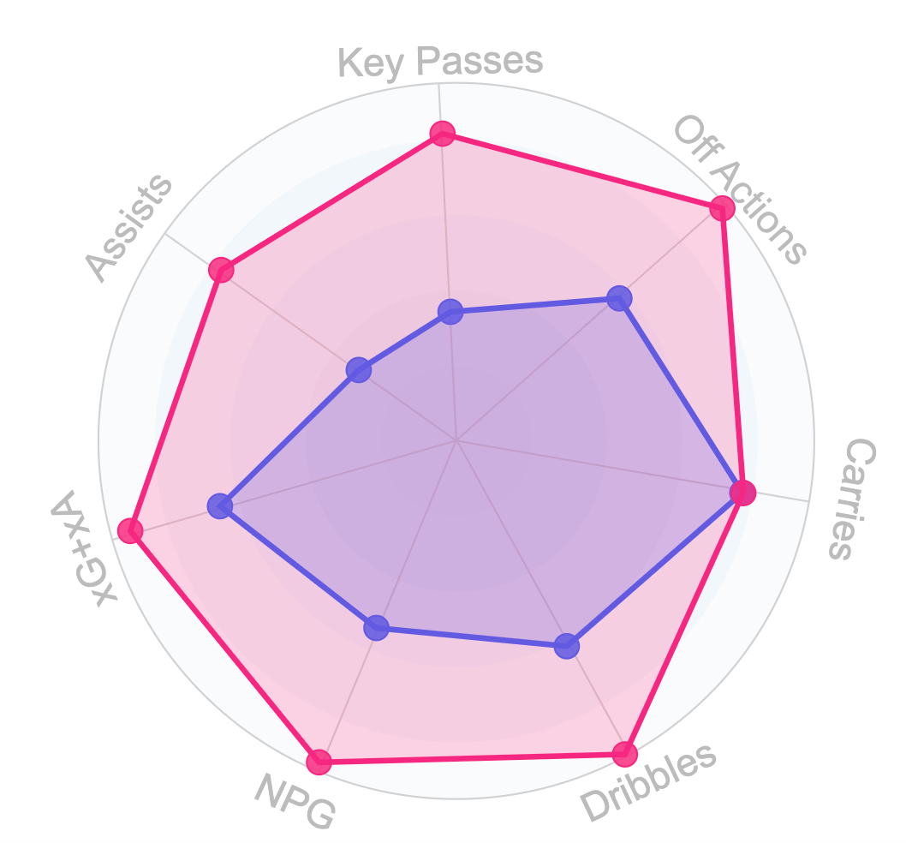
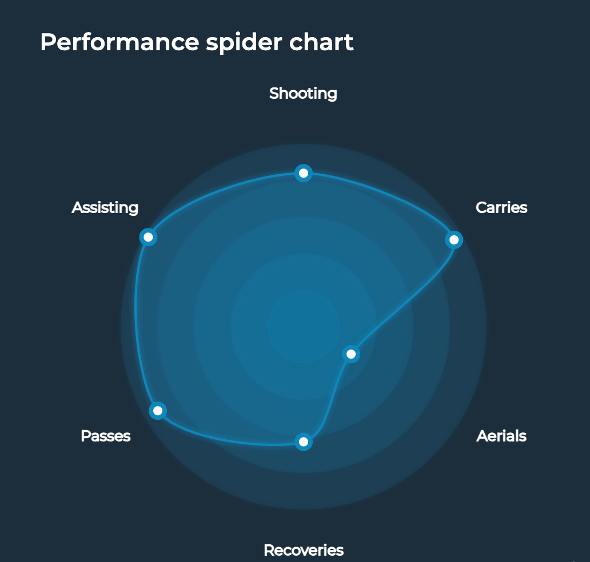

Fixing Manchester United: What Has Been Done And What Should Be Done
By Blake Glickman | May 17, 2024
There are few (if any) soccer teams with the global reputation and historical success of Manchester United. Billions of fans around the world support the Red Devils, and for good reason. United is one of the most decorated clubs in the history of the sport, with a history of winning nigh-unrivaled by any other team. The incredible appeal of playing at Old Trafford has persisted even without legendary manager Sir Alex Ferguson; over the last 10 years, Manchester United has been represented by some of the biggest and most popular players in the world: Zlatan Ibrahimovic, Paul Pogba and of course, Cristiano Ronaldo. But despite all the big and flashy signings, it’s clear to just about any soccer fan that a team once considered the greatest in the world is nowhere near that title now. No Manchester United squad over the past 10 years has brought home a Premier League or Champions League trophy, the longest such streak in over 40 years. And with both competitions being dominated by squads such as Real Madrid, Bayern Munich, Liverpool, and Manchester City, that streak doesn’t seem to be ending anytime soon. Couple that with crashing out of European Competition entirely and sitting at 6th in the Premier League, and the future seems even bleaker for the Red Devils. It’s easy to see why; Manchester United under the Glazer consortium has been, simply put, inefficient. A mixture of poor staff signings made and a lack of investment from the owners have created a logistical nightmare for the squad, with outrageously overpriced transfers and poor training conditions leading to an unsynchronized group of players. And so, it’s clear to see why the decision to sell part of the club was one that excited just about every Manchester United fan. It’s only been a few months since INEOS purchased a minority stake in the team that allowed them to take over footballing operations, but the moves they have made (and plan to make) look promising for the future. But with a mountainous gap between United and outfits like Manchester City and Real Madrid, it’s going to take a lot more than a few moves to bring the Red Devils back to the top of the soccer world. It’s clear that the drive to make moves at Manchester United is present for the first time in a while. Any owner can make moves, but what separates the best from the rest is making good ones. In this article, I’ll be examining INEOS’ performance since taking over the club and taking a look at some ways that Manchester United can get back on track.
Perhaps the most exciting signing Manchester United has made since INEOS came into power is that of Omar Berrada, who is set to take over as Chief Executive of the team. While his winning pedigree is undoubtedly impressive on its own, one of the biggest takeaways involving Berrada’s signing is where he came from. The Spaniard signed for United from bitter rivals Manchester City, a move that shocked many. In Berrada’s 10 years at City, he has overseen the formation of a squad that has perennially won the Premier League (and more importantly, the Champions League). Berrada’s value-based philosophy will certainly introduce a new mindset to Manchester United as they have historically had issues with overpaying players, whether in terms of wages or transfers.
INEOS also seem to have captured Southampton’s Director of Football Jason Wilcox, who has an impressive resume in terms of signings. He worked as Manchester City’s Academy Director before joining the Saints, signing and overseeing the development of many impressive players, including Phil Foden, Cole Palmer, and Jeremie Frimpong. His many years of experience working with both academy and first-team players should translate well to Manchester United’s new front office. It also doesn’t hurt that both Wilcox and Berrada have experience working for the team that Manchester United are chasing.
The last major staff signing that INEOS have been tipped to make is that of Dan Ashworth, Newcastle’s current Sporting Director. He has been placed on gardening leave from his current club amid the start of negotiations between the two clubs. Ashworth is widely known as one of the best Sporting Directors in the world, with one of the most impressive scouting abilities in all of Europe. Ashworth has made some fantastic value signings during his time at Newcastle, including the likes of Nick Pope, Sven Botman, and Alexander Isak. But just as impressive are the signings that he oversaw while working at Brighton. Ashworth was instrumental in the signings of Kaoru Mitoma, Alexis Mac Allister, and Moises Caicedo (among others). Newcastle made a staggering 150 Million Euro profit on Mac Allister and Caicedo alone, with Mitoma’s market value sitting over 40 Million Euros more than what Brighton purchased him for. There’s no question that Ashworth is a genius when it comes to smart transfers, a skill Manchester United could definitely use. It’s looking likely that the Red Devils will be somewhat strapped for cash this summer compared to recent years considering their near-zero chances of qualifying for the Champions League next season.
While these signings all seem fantastic in principle, it’s important to note that Wilcox and Ashworth aren’t necessarily guaranteed to go to Manchester United. If they did, their arrival would likely come after a long grace period and expensive negotiations. But in my opinion, the potential signings of Wilcox and Ashworth are ones that should happen no matter the cost or waiting time. A three-headed monster of Berrada, Wilcox, and Ashworth has the potential to bring about a new and more efficient version of the club. It’s important to note that there are definitely more signings to be made; INEOS is projected to give the green light for a complete overhaul of the club’s front office. While the job isn’t finished yet by any means, the front office signings that INEOS have made so far look promising for Manchester United’s future.
The Defensive Issue

Above is star defender Lisandro Martinez’s spider chart, which tracks his performance in a few key metrics. While he is fairly well-rounded, the glaring hole comes in his lack of aerial ability. He doesn’t win very many aerial duels, which is expected of a 5-foot-8 center back who consistently matches up against strikers 6 feet tall. An aerial presence is particularly important for United because of the immense aerial threat presented by rival Manchester City’s Erling Haaland. If United want any hope of getting back to the top, City is a team they will need to get through. I’ve identified a few center-back prospects with a great aerial presence that also work well with Martinez’s passing and defensive abilities.
The first prospect, 20 year old Ousmane Diomande, comes from the Portuguese league’s Sporting CP. Diomande has long been watched by the European soccer world, first making his debut early last year for Sporting. He has been called up to the Ivory Coast national team on multiple occasions, making this year’s AFCON-winning squad. Below is a center back partnership of Martinez and Diomande.
While he’s not perfect in the air, he’s considerably better than Martinez. Diomande also offers great passing capabilities, which is a testament to his high game IQ. At just 20, he possesses a great feel on the ball and looks to be a top center back for years to come.
The second prospect in question is Ecuadorian international Piero Hincapie of Bayer Leverkusen. The 22 year old has put in quite a shift for the Bundesliga leaders (and only unbeaten team in Europe), and his aerial presence could greatly help United stop Haaland, among others. Below is a chart showing a defensive unit of Martinez and Hincapie.
Hincapie would likely cost around the same amount of money for Diomande if United were to make a move for either in the summer (Between $50 Million and $70 Million Euros), but the next centerback prospect is a much cheaper option. Lewis Dunk of Brighton is something of an outlier when compared to the previous two center backs, as he is not only an England international but also 10 years older than either Hincapie or Diomande. Dunk has been a force at the back for Brighton this season, and his aerial presence has been nothing short of outstanding. He would likely be a cheaper signing due to his age (32), but he could be a great piece to supplement another signing or be in the mix to start most matchdays. I think Manchester United would be wise to go with any one of these prospects, but it’s impossible to mention summer signings without talking about INEOS-owned Nice’s Jean-Clair Todibo. The 23 year old Frenchman and Ex-Barcelona prospect has been heavily linked with United over the past few transfer windows; while he doesn’t offer the same aerial capabilities as the other players I mentioned, he compliments Martinez well in his defensive actions and carrying capabilities.
The Midfield Issue
 These graphics show the percentiles and performances of Manchester United’s core midfield as of late, consisting of Scott Mctominay, Kobbie Mainoo and Bruno Fernandes. The data shows that McTominay lags behind both of his midfield partners in every major passing and defensive statistic, a sign that he may be better employed as an impactful sub than a weekly starter. While Mainoo and Fernandes mesh well, there’s still work to be done in creating a dominant midfield that can rival the world’s best. It’s pretty much impossible to win any major silverware without a top midfield and I fully expect INEOS to prioritize a younger holding midfielder who specializes in carries and forward passes. It’s important to remember that United may be strapped for cash this summer and there are a lot of other positions to prioritize, including new center-backs, wing backs, and wingers. Being cost-efficient allows for spending in other positions as well. Taking all this into consideration, I believe I’ve found a quality midfield prospect for INEOS who shouldn’t break the bank: Angelo Stiller. Stiller is a 22 year old midfielder from VFB Stuttgart in the German Bundesliga. The Ex-Bayern Munich talent has played exceptionally well this season, controlling the pace and tempo of matches with his eye for forward passing.
Above is a midfield consisting of Stiller, Fernandes, and Mainoo. It has become considerably more well-rounded as a result of Stiller’s introduction. His market value currently sits at $14 Million according to transfermarkt, which is a figure that could be a steal for United should they buy him in the summer transfer window. Another name to watch could be Joao Neves of Benfica. The 18 year old talent has been lighting up the Portuguese league this season and offers similar forward passing figures to Stiller while also adding a bit more on the defensive side of the ball. The purchase of Neves’ abilities would create a young and entertaining midfield in Manchester which would have the potential to match any unit in the world on their day. Below is what United’s midfield could look like with Neves.
While it would be an incredible opportunity to have Neves come to Old Trafford, two main problems stand in the way: cost and competition. Neves has gained a lot of attention this season because of the caliber of his performances, which means that many other clubs are eyeing him for their midfields as well. The likes of Borussia Dortmund and Manchester City, among others, have been scouting Neves in hopes of signing him for themselves. In addition, Benfica don’t seem to want the Portuguese prospect to leave for any less than his release clause of 120,000,000 euros. Multiple reports from sources of varying reliability have said that Sir Jim Ratcliffe could be set to approve a bid for Neves’ release clause, which could make for an electrifying signing to begin the summer transfer window. Bringing in either of the two midfielders mentioned would create a more progressive unit while offering quality defensive capabilities. The fact that they’re as good as they are while also having so much potential to grow is an added improvement.
The Attacking Issue
Manchester United has a serious goalscoring problem. At the time of writing, they have a negative goal differential in the Premier League. While part of this can be attributed to injuries and players being forced to play out of position (and coming back too early in poor form), part of the blame has to go to the players themselves for poor performances. At the end of the day, availability is the best ability. An attacking unit of Marcus Rashford (LW), Rasmus Hojlund (ST) and Alejandro Garnacho (RW) has yielded some pretty impressive results; United has scored nearly a goal more per game and has won 42% more of their games when all three of those players are starting together. Given the consistently poor fitness of United’s attacking unit, I believe it’s necessary to come up with a different solution than hiring better physiotherapists or decreasing their workload. And while the goalscoring output with United’s fully healthy front three is solid, it’s still lagging behind the likes of City and Arsenal. I don’t think solving the problem is as much about the skills of the players as much as it is about how they use them. While injuries do play something of a part in Manchester United’s goalscoring woes, part of the issue also lies in the fact that selfish play prevents Hojlund from getting the ball in dangerous areas. Despite barely getting the ball (and missing a portion of the season due to injury), the Danish frontman is joint-second in United’s Premier League Goals (7) and leads the team in Champions League Goals (5). While this is clearly a huge problem, I believe it can be fixed largely with a new philosophy centered around getting the ball to people who can put it in the net.

The above chart demonstrates just how little Hojlund receives the ball. Despite only touching the ball 82 times in the penalty area over his first Premier League campaign, the Danish striker is still tied for the second most goals for the Red Devils. While Erling Haaland receives a somewhat similar (although still more than) amount of touches to Hojlund in dangerous areas, the Norwegian striker also receives chances in the penalty area at a higher clip. This next statistic should provide any further confirmation required to prove that Hojlund is United’s key to scoring:
In the Premier League this season, Rashford and Garnacho (combined) average one goal every 104.4 touches in the penalty area and final third. Hojlund, for reference, averages a goal in the league every 48.6 touches in such areas. That’s less than half of the amount of touches that his attacking partners require per goal.
All of this together makes it pretty clear that Manchester United need to change something on the wing, whether it be the playstyle of their wingers or the wingers themselves. I’ve examined two options below that would fix a lot of the issues facing the team’s attack.
The above comparison is between Crystal Palace’s Michael Olise (pink) and Marcus Rashford (purple). For wingers, Olise is in the 99th percentile for successful dribbles, 97th percentile for non-penalty goals, and the 94th percentile for xG + xA. He also averages 9.04 crosses per 90 minutes, which ranks first in the Premier League among those who have played at least 8 90 minute periods. Olise’s crossing ability in particular complements Hojlund perfectly; the Danish striker’s 6’4 frame and natural athleticism makes him an asset in the air, an ability that United’s current attackers haven’t utilized. Normally, a player like this at such a young age (21) would have a ridiculously high price tag. But Olise’s contract includes a release clause valued at 60 Million Euros, a price that could be affordable for INEOS come this summer. Admittedly, the Frenchman’s skill is one of the worst-kept secrets in the league. In addition to Manchester United, there has been interest shown by title rivals Liverpool and Manchester City. However, I believe that the possibility of a starting spot on the Red Devils could persuade Olise to sign for United in the upcoming transfer window.
Another less likely possibility on the wing is Athletic Club’s Nico Williams. While his spider chart (pictured below) is incredible, it really doesn’t do him justice.
Williams has an incredible affinity for goal contributions, ranking first in La Liga in both goal creating actions (20) and goal creating actions per 90 (1.06). He’s also joint 2nd in assists in the league with 8 and 12th in crosses (3rd among those who have played under 20 90 minute periods). Like Olise, Williams is 21 and also has a release clause built into his contract. Williams’ release clause sits around 47 Million Euros, which is actually less than Olise’s. While they have been linked with the Spaniard, Manchester United will have to stave off interest from Barcelona and Chelsea. It’s important to note that the probability of the transfer actually happening has decreased lately, but it hasn’t been ruled out yet. I think that INEOS could best solve the attacking issue by maintaining their young core while also bringing in some help on the wing to suit a Hojlund-based gameplan. I strongly believe that the rumors of a mass clearout in the summer are true, especially because the team is going to need to raise funds if they want to sign any players. I also believe that some fan-favorite players could be casualties of INEOS’ summer window and effort to create a “new” Manchester United. While the sale of Jadon Sancho (25 Million Euro Valuation via transfermarkt) seems a certainty, I also think that Marcus Rashford could be on his way out of Old Trafford as well. The left winger has been a defining player in the Post-Fergie era, but a combination of his poor form and public controversy this season have opened the doors for a summer exit. Paris Saint-Germain have been the primary suitor so far, and rumors of a deal worth up to 80 Million Euros should only intensify with the imminent departure of Kylian Mbappe. Assuming both Rashford and Sancho are sold at their valuations (nothing more, nothing less), Manchester United should recoup 105 Million Euros. These fees combined would be only 2 Million Euros off from allowing INEOS to purchase both Olise and Williams at their current release clause prices. While it would be a dream scenario, the chances of Manchester United signing both wingers is obviously extremely low; if they had to pick one, Olise would likely be the club’s choice due to his proven Premier League experience and concrete interest in playing for the Red Devils.
Overall, there’s a lot of work to be done in Manchester over the offseason; between player and staff transfers, the 2024 summer window is shaping up to be the most eventful in years. While Manchester United’s new ownership has taken a lot of the right steps to bring them back to the top, a majority of the work to be done will take place in the summer transfer window. It may be impossible to say how successful INEOS has been so far with the club, but an answer to that question should be available fairly soon.